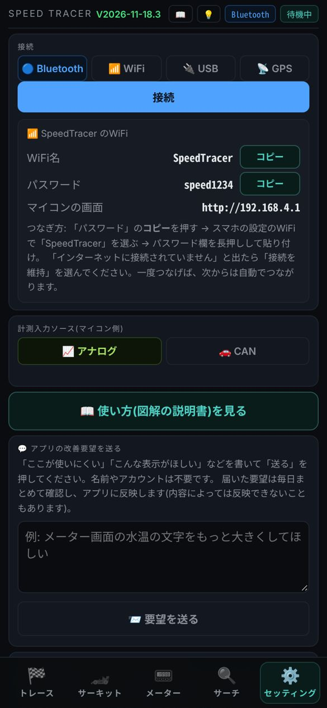
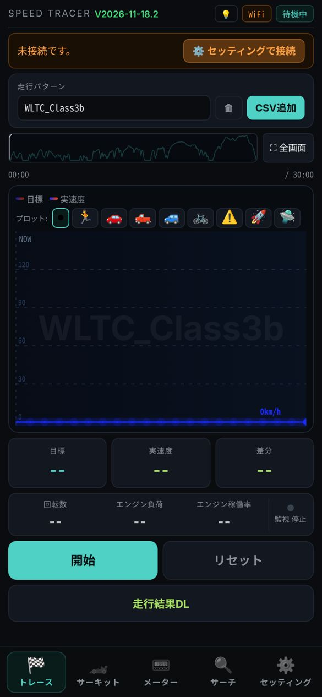
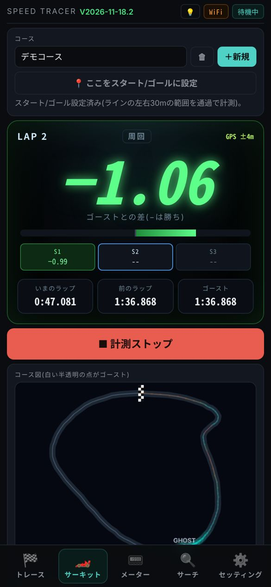
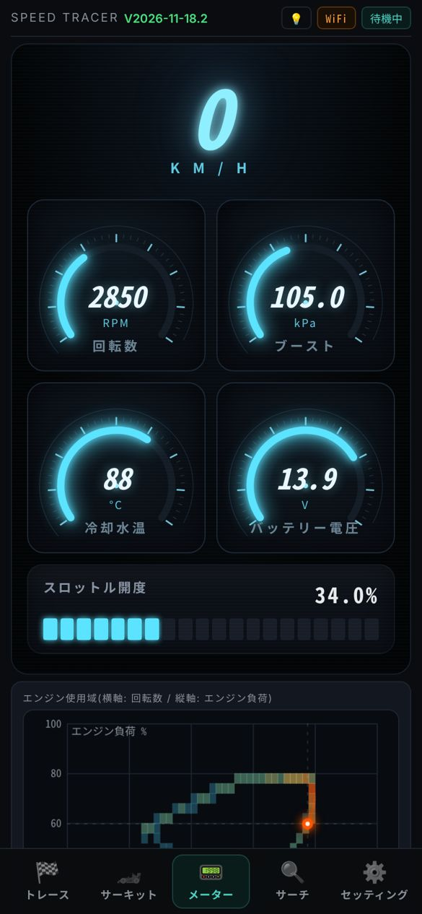

かんたん説明書
はじめて使う人へ。車につないで、スマホで走りを見るための道具です。
しくみ
決まった速度に合わせて走る
WLTC などの走行パターンの線に、自分の速度を重ねて練習。
ゴーストとタイム勝負
自分のベストと比べて、勝ち負けを大きく表示。
車の状態を見る
回転数・水温・ブースト・電圧・アクセル開度と、エンジンの使い方のグラフ。
車のデータを調べる
その車で読める項目を探す。故障コードの確認も。
STEP 1–3準備
アプリを入れる
Android: Play ストアのテスト版を使います。下のリンクを開いて「テストに参加」→ インストール。
https://play.google.com/apps/internaltest/4699975890017423763※ 事前に持ち主へ Google アカウントを伝えて、テスターに登録してもらう必要があります。
アプリを入れない場合: Chrome で次のアドレスを開くだけでも使えます(Bluetooth が使えない端末があります)。
https://ino-tools.github.io/speed-tracer/speed_tracer_pc.html本体を車に差す
差し込み口(OBD2端子)は 運転席の足元・ハンドルの下あたり。カバーが付いている車もあります。エンジンを止めてから、奥までまっすぐ差し込みます。
ケーブルがペダルに絡まない位置にしてください。
エンジンをかける
エンジンをかける(または電源を ON にする)と本体が動き出します。次の手順でスマホとつなぎます。
しばらく車を使わないときは本体を抜いておくと、バッテリー上がりの心配がありません。
STEP 4スマホとつなぐ
画面下の「セッティング」で行います。

B W 接 PBluetooth でつなぐ Android アプリならこちら
- スマホの Bluetooth をオンにする
- 「セッティング」で Bluetooth を選ぶ(B)
- 「接続」を押す(接)
- 一覧に出る SpeedTracer-ESP32 を選ぶ
- 「Bluetooth接続済み」と出たら完了
初回は「付近のデバイス」などの許可を聞かれます。「許可」を選んでください。
WiFi でつなぐ iPhone・ブラウザならこちら
- パスワードをコピー(下のボタン、またはセッティングの P)
- スマホの設定 → WiFi で SpeedTracer を選び、パスワード欄に貼り付け
- 「インターネットに接続されていません」→ 接続を維持
- アプリに戻り WiFi を選んで 「接続」(接)
つながったら
画面下の「トレース」や「メーター」に切り替えて使います。WiFi はスマホが覚えるので、次からは近くで電源を入れるだけで自動でつながります。
STEP 5画面の見方
画面下のバーで切り替えます。

トレース
- 「走行パターン」を選ぶ
- 「開始」を押して走る
- 目標の線に自分の速度の線を重ねる
- 終わったら「走行結果DL」で保存

サーキット
- コース上のラインで「ここをスタート/ゴールに設定」
- 走る前に「計測スタート」
- 大きな数字が −(緑)なら勝ち、+(赤)なら負け
- 1周目のタイムが次からゴーストに

メーター
- 速度・回転数・ブースト・水温・電圧・アクセル開度を表示
- 下のグラフは、エンジンをどの回転数・負荷で使ったかの軌跡
サーチ
「取得できる項目を探す」で、その車から読めるデータの一覧が出ます。故障コード(DTC)の確認もここ。
セッティング
接続、アクセル開度の0点合わせ、アプリへの要望の送信はここから。
困ったとき
⚠ 安全に使うために
- 運転中はスマホを操作しない。設定や開始ボタンは停車中に。
- スマホはホルダーに固定。画面はチラッと見る程度に。
- サーキットモードは サーキットなど公道以外で。
- 本体の抜き差しは エンジンを止めてから。
- ケーブルがペダルや足に絡まないように。
- 長く車を使わないときは本体を抜く(バッテリー上がり防止)。